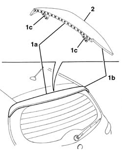
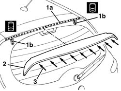
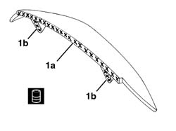
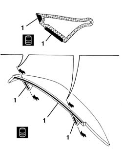
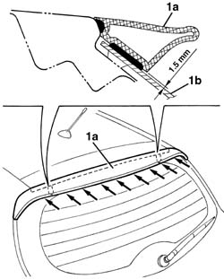

7210G76 rear spoiler
- Path
- Procedures > 72 PANELS AND FRAME > 7210 REMOVING REFITTING > 7210G accessory parts > 7210G76 rear spoiler
- Kind
- repair procedure (removal / refitting; the operation number is the code)
- Applies to
- all engines; all production periods
- Interactive page
- https://sloeber94.github.io/elrnDB-a147/en/#/3025982
Applies to: all engines; all production periods; only with equipment: GTA
 Removing
Removing
 Refitting
Refitting1. Using a cutter, cut the bead of sealant along the entire perimeter (1a) of the spoiler (1b), taking care not to nick the vehicle paintwork. Also cut the sealant sticking the supports (1c) to the rearscreen, taking care not to nick the surface of the actual rearscreen.
2. Keep the spoiler.

Applies to: all engines; all production periods; only with equipment: GTA
Refitting
RemovingCheck that the spoiler is undamaged.
1. Clean the surfaces (1a) and (1b) of the vehicle affected by the sticking of the spoiler, removing any residues of adhesive; then degrease the surfaces using heptane. Apply activating product in the area (1b) of the rearscreen, then remove it immediately using a paper or suitable cloth; note that the immediate removal is vital to promote good adhesion.
 | Type | Component | Name | Qty. |
|---|---|---|---|---|
1b | Activator | REARSCREEN | Betawipe 04604 | - |
2. Test fit the spoiler.
3. Have suitable equipment ready for fitting the spoiler on the vehicle after the sticking process described below.

Applies to: all engines; all production periods; only with equipment: GTA
1. Clean the surfaces (1a) and (1b) of the spoiler where the adhesive is to be applied and degrease with heptane. Apply primer to the surfaces (1a) and (1b) using the minimum possible thickness (20 to 50 micron mm is the recommended amount).
| Type | Component | Name | Qty. |
|---|---|---|---|---|
1 | PRIMER | SPOILER | Betaprime 5404 cap. 9.55738/06 | - |

Applies to: all engines; all production periods; only with equipment: GTA
1. Wait for at least three minutes, but no longer than 24 hours (the recommended time is less than 1 hour), then apply the sealant bead (hot, following the instructions on the product packaging).
| Type | Component | Name | Qty. |
|---|---|---|---|---|
1 | Sealant | SPOILER | Betaseal 1812 cap. 9.55727/02 (quick fix) | - |

Applies to: all engines; all production periods; only with equipment: GTA
1. Place the spoiler (1a) in position and fit it using the equipment.
If necessary, clean any residues of sealant from the trim and the bodywork.

Applies to: all engines; all production periods; only with equipment: GTA
Wait for at least 48 hours before moving the vehicle after the sticking.